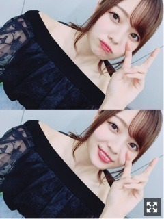
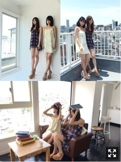
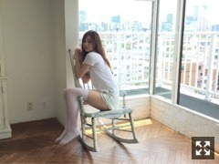
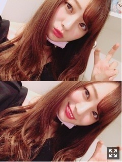
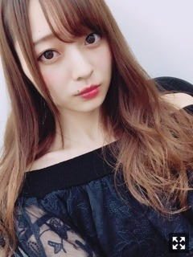

どこでもおんなじ空。梅澤美波
みなさまこんにちは！！
乃木坂46 ３期生の
梅澤美波です！！！
(今日は長すぎです、、でもちゃんと読んで欲しいです

今日のです
最近、一日中ぐうたらする日を
全く作ってなかったので
お休みの日に何もしない日を作ったの。
でもやっぱりなんか落ち着かなくて
22時から部屋の片付けをひたすらしてた（笑）
この間、
みづきとりりあとかえでとわたしで
映画鑑賞会しました☺︎☺︎
映画見て〜たくさんお話したりして
めちゃくちゃ楽しかったの( ¨̮ )
気づいたらわたしが寝てしまってね
起きたら３人も寝ててかわいかった( .. )（笑）
一日中ずっと一緒にいたよ〜
気を使わないっていいね、楽ちん
なんでも話せるのって素敵〜
皆様きっともう見てくださいましたよね。◎
選抜発表収録時は、
率直な感想、
どうしたらいいか分からず、感情も訳分からず、コントロールできず、ずっと、ただただその場に座っているだけでした。
そして３期生から選抜が２人。
しかもWセンターです。
最初に出てきた気持ちは、
寂しい でした
きっと誰か入るんだろうな〜
とは薄々感じていました、けど、
本当に現実となると中々受けとめられず、でした
３期生１２人で、
9月4日のお披露目から活動してきて
振り返ると物凄いたくさんの経験をさせていただいてきました。
怒涛の日々でした。
長いようで短い時間でした。
人生が変わるのが目に見えて分かった期間だった
３期生としての活動がどうなってしまうのか、減ってしまうんだろうなって、悲しくて寂しくてたまらなかった。
ずっと一緒にいたからね( .. )
先輩方に囲まれて、しかもセンターで
乃木坂に加入して１年も経っていない２人が
乃木坂46の顔となるセンター。
今、私ができることは２人を支えることだなって思います☺︎
あの２人が帰ってくる場所はここしかない
同期ってゆう存在が今すごく大切なんじゃないかって
だから、２人が頑張れるように
いつでも支えられる環境を作っておくのが
今残された私達に出来る事だと思っています
色々思う方もいると思います
その気持ちも理解できます
けど、応援してあげてほしいです。
上京してまだ半年、
一年前まで普通の高校生だった子が
今、こうして乃木坂46のセンターに立っているんです。
とても夢があることだと思います。
見守ってあげてほしいです。
大好きな2人だから全力で支えたい！！☺︎
正直、今は不安でいっぱいです。
残された私達３期生１０人は
この先どうなっていくのか。
乃木坂の顔のセンターと、私達３期生、
その差は計り知れないくらい大きいんです
アイドルって思い描いてたことだけじゃない、
年齢的にも周りの友達を見れば安定した道を進んでる子だってたくさんいる
それでもここにいる意味を必死に探しました
今はがむしゃらに目の前にあるやるべき事を
やっていこうと思います。
まだまだこれから！！☺︎
きっとゆっくりだと思う、
けど、ずっと側にいてほしい
皆様の存在が、今もこれからもすごく必要です。
皆と笑いたいっておもってる！☺︎
皆様がいないと何も出来ない私です( .. )
ブレずにずっとついてきてほしいです
誰かひとりでもいいから、
その人の視線の先の１番でいられたら
それで幸せ☺︎☺︎
綺麗事みたいだけど本当にそう！（笑）
不安です、でも
頑張ります
ももこゆうき、改めておめでとう☺︎☺︎
支える準備はできてるからいつでも頼るんやで〜( ¨̮ )
がんばれ！！！！！！！！！
ー
BOMBさま見ていただけましたか？？
オフショット！！！

対称的なワンピース☺︎☺︎
形がとっても可愛かった〜(；＿；)
見ての通り天気が良くてね
最高にきもちかった！！
笑顔☺︎☺︎☺︎☺︎☺︎

ソロカット！
長身コンビということで
ミニ丈のワンピースとパンツでした☺︎
ニーハイとか履くことなかなか無いから
レアだよ〜
みんな、レアだよ〜( ¨̮ )
（笑）
真夏の全国ツアー2017
東京神宮での公演、皆様２日間ありがとうございました！
トップバッターとして、
３期生１２人でステージに立たせていただきました。
実際、神宮に来てくださっている
４万人の方々の中で
３期生を待ち構えてくださっている方が
何人いるのか、想像もつかないし
ほとんどの方が、先輩方の出番を
楽しみにしていたと思います。
けど、ステージに出ると
暖かく迎えてくださる皆様がいました。
不安なんて吹っ飛んだ！！
私達は私達らしく、
自分達が全力で楽しめばきっと会場にいる皆様にも伝わる！って思いました。☺︎
完全燃焼でした！本当に楽しかった！
私達３期生がはじめにステージに立つ意味を
すごく考えパフォーマンスしました。
３期生パートのMCを担当させていただきました。
３期生として活動してきて
"まとめ役"って言われることが多いけど
自分の中ですごく葛藤があります。
話が上手なわけでもない、
まとめるのがうまいわけでもない、
MCの内容だったり、そうゆうのは３期生の誰に相談出来るわけでもない、
中心で話すことなんてしてきた人生じゃなかったから
でも、自分ができる役割があるのなら
私は全力でやり遂げたいと思いました。☺︎
だからこの期間、言うことは言うし、
できることはしてきたつもりです。
もちろん、今回だけでなく、今までも。
躊躇してたって仕方ないからね、
先輩方のステージは、MCは、全然違くて
パフォーマンスしている時の表情とか
ステージの歩き方とか
いつ見ても輝いている笑顔とか。
２日間含め、リハーサル時から学ぶことは山ほどありました。
ステージに立った数が
先輩方よりも全然まだまだ少ない、
けど、
そんなこと言っていられる立場に今私達はいません。
もっと上を目指さなければいけないって
常々思っています
先輩方はすごい高いところにいます。
ステージだって、ものすごく大きい場所です。
東京ドーム公演。
同じステージに立つために、力はまだまだ足りないかもしれないけど、私達にでもできることはあるはず。
もっともっと成長していきます！
ここのステージに立てて、
応援してくださる方に出逢って、
こんなに素敵な景色が見れる人生って
物凄く幸せ！！！！
３期生だけで、何万人もの方の前で
パフォーマンスをするなんて
もう無いことかもしれないからね( .. )
こんなチャンスをくださった
スタッフさんや先輩方に本当に感謝しています。
本当にありがとうございます。
タオルやうちわやボード、
思っていたよりも持ってくださっている方が多くてビックリしちゃった(；＿；)
あっちもこっちも！嬉しい(；＿；)ってなってた、、
ありがとう、全部見えてたよ☺︎
ステージバック席の皆様も、
私なんかでごめんね、盛り上がってくれて最高に嬉しかったよ☺︎☺︎
２日間も行けて最高にうれしかった！！
私のタオルも沢山あったの(；＿；)
大好きなオフショアガールでテンション最高潮な私が見てもらえたかな( ¨̮ )（笑）
今は先輩方の背中を追いかけているだけで
私達の力じゃなくこのステージに立っています。
けど、いつかは、
ここにいて意味のある人になりたいの！
もっと貢献したい！
MCもうまくなりたい！
人の目を引けるパフォーマンスがしたい！
がんばる！
思ってることの共有って難しいんです
言うべきことは言うけど
自分の中で収められることは外に出さない
それが苦しくなった時もあったけど
それで良いなら私は辛くなんてない
とりあえず口だけは嫌いです
だから私は頑張ります

笑顔でやんす
告知◎ 〜誌面
〇７／７ BOMB さま
れのとペアグラビア、発売中です☺︎
〇７／２０ ヤングジャンプ さま
なんとですね
ソログラビアでございます。
(；＿；)
前回言っていたお知らせとはこのことでございます。
歓喜でございます
先日撮影してきました。
嬉しいです、本当に嬉しい。
結果に残せるのが１番嬉しくてですね
皆様に見てもらえるのが嬉しくて
早く言いたかった！！
衣装もめちゃくちゃ可愛くて、
スタッフさんも優しい方ばかりで
本当に楽しい撮影だったの(；＿；)
是非見てください！！
〇７／２４ B.L.T. さま
ちはるさん、いおりさんと３人での撮影してきました☺︎☺︎
先輩方との撮影は初めてだったので緊張したけど御二方とも優しすぎて終始楽しすぎた撮影でした(；＿；)
嬉しいな〜先輩とお仕事は学ぶことが沢山あって勉強になります☺︎
絶対見てください！！
〇７／２９ 月刊エンタメ さま
新内さんとペアグラビアでございます(；＿；)一緒にお仕事したいなって思ってたから幸せだったの( .. )私が普段妹みたいな立ち位置に回ることが絶対ないから、なんか甘えられる存在だなあって感じました。新内さん本当に優しくてね、撮影終わったあとカフェでご馳走してくださったりしたの(；＿；)たくさんお話してくださって、本当のお姉様みたいですごいだいすき( .. )新しい目標も見つけられました☺︎
絶対みてねみんな！！
皆様に嬉しいお知らせがもっともっとできるように頑張ります！
〇７／１７ 乃木坂の『の』
みり愛さんとりりあとです☺︎ラジオ好きで聴くことも多いから、初ラジオ緊張したけど楽しかった〜☺︎☺︎聴いてね
〇７／３０ 18th発売記念３期生 大阪単独公演
再び単独やらせていただきます！パフォーマンス頑張ります！！来て下さる方はお楽しみに☺︎☺︎
〇８／６ TOKYO IDOL FESTIVAL
３期生出演決定致しました！！
とても嬉しいです、、
たくさんのアイドルさん見て勉強してきます！！
もちろん、パフォーマンス頑張ります☺︎
乃木坂46という名前を背負ってるからね、凄いなって思わせるパフォーマンスがしたい
アイドルさん大好きだから出演できることが本当に嬉しい、、
あと、18枚目の個別握手会、
追加会場で１２／２３ 夢メッセみやぎ
決定致しました！！
申し込みは今日からかな？？
他会場も三次受付が今日からですよ〜
以前アルバムキャンペーンで宮城にはじめてお邪魔して、
皆様の優しさとご飯の美味しさに感動して
大好きになった宮城☺︎☺︎
ぜひお待ちしております( ¨̮ )
(クリスマスイブの前日だけどサンタ着てほしい？着てあげてもいいよ〜（笑）しょうがないな〜
サンタ着ます☺︎（笑）
本日、松村さんが出演されている舞台
｢FILL-IN〜娘のバンドに親が出る〜」
観劇してきました！！
めちゃくちゃ笑いました！本当に！
でも、感動する場面もあって涙したり、、
めちゃくちゃ素敵な舞台でした！
音楽って素敵だなって思った☺︎☺︎
松村さんが可愛すぎて本当に言葉にならなかったです、、（笑）
本当に素敵すぎて面白すぎてもう1回みたい( .. )
コメントありがとうね☺︎
みんな受験、お仕事、勉強、バイト、学校
がんばれ〜
私も頑張るで〜☺︎
ごめんねいつもこんな長くて
重たい文章みたいのしか書けなくて。（笑）
伝えるのが下手くそなの！
今皆様にお話できる場所が
ここしかないからさ、ごめんね。
私は元気いっぱいなので！！
日曜日、月曜日のアルバム個握！
京都名古屋にきてくれるみんなー！！
楽しみにしとけよな〜☺︎☺︎☺︎☺︎

髪染めたい( .. )
SHOWROOMさん、自分のタイミングでできる時にやろうと思うのでよろしくね☺︎
それじゃあまたな〜
ずっと永遠に、なにも変わらずに続くものなんてないんだと思う、悲しいけどそれも新しいモノに出逢うきっかけだったりする
言葉にするのって大切なんだなって思うけど、全部全部口にできないのが私の性格です
できないなんてないからね、だったらやればいい
さあ皆様、今週も一緒にがんばろな〜☺︎
Original：https://www.nogizaka46.com/s/n46/diary/detail/39764?ima=0525&cd=MEMBER